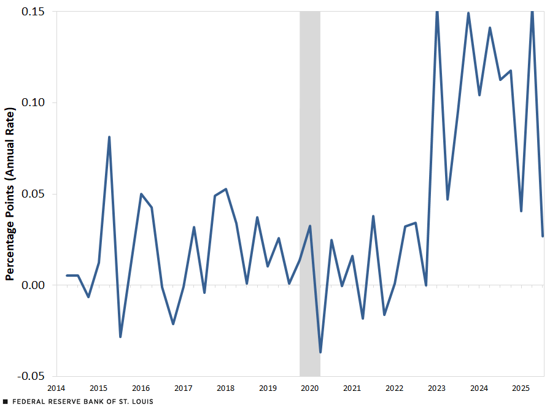

Introduction
Everybody has heard of AI (Artificial Intelligence) by now. Since 2023 every single person on this planet has heard of just what gLLMs (generative large language models), like “Google Gemini” or “Microsoft Copilot”, in accordance with their rise in popularity with the public release of OpenAI’s gLLM “ChatGPT” in late 2022. With the rapid increase in the capabilities of AI, it has become a widely used tool in many places all around the world.
As such, it is no real surprise that people are beginning to worry about the possibility of dangers arising with the continuing growth of Large Language Models and Artificial Intelligence in general. However, people are unaware of what AI does and how it influences their lives. They talk about how AI is and will be taking over everyone's jobs and ruining the economy, without being lectured on the very basics of the topic they speak so confidently about to others. In truth, both the spreading of AI and the influence it brings are important topics on a global scale.
“‘Earlier LLMs were more likely to avoid answering difficult questions, whereas newer, larger, and more instructible models, instead of refusing to answer, often produced misleadingly authoritative yet flawed responses,’ the researchers wrote,” says Lisa in one of her articles (2025). This raises concern with AI that will, among other things, be addressed in this text.
Artificial Intelligence has had a significant impact both on many fields of study, the economy, and even the social interactions of our society as humans. It has also boosted our capabilities in many fields of medicine, mostly in pattern and image recognition of diseases or other complications within possible and identified patients.
In this text I will be analyzing and covering the positive, and negative, effects of Artificial intelligence both to grown-up life and to workplace environments, both broadly and, more specifically, in the departments of finance, medicine and engineering, as well as possible future outcomes related to its expansion and influence on the world.
What is Artificial Intelligence?
Before we can start talking about how artificial intelligence (AI) is influencing our world and everyday life, it is important to first understand the very basics of artificial intelligence and how they work.
Artificial intelligence is an algorithm capable of simulating decision-making using various algorithms when given a certain set of data. It can range from simple pathfinding algorithms in video games and even CAPTCHAs, to gLLMs like “ChatGPT.”
Types of AI
Artificial intelligence is categorized into 3 separate grades: narrow, general, and super. Narrow AI is currently the only grade of AI humans have managed to create. It is defined as AI, capable of a single, or multiple closely related, predefined tasks. Clear everyday examples of Narrow AI are chess bots like “Stockfish” and chat bots like “ChatGPT.” AGI (artificial general intelligence) is defined as an AI capable of using previous learnings and skills to accomplish new tasks in a different context without the need for human beings to train the underlying models, while ASI (artificial super intelligence) is defined as able to think, reason, learn, make judgements and possess cognitive abilities that surpass those of human beings. Neither of the 2 latter ones, however, exist, and are purely theoretical concepts.
AI has 2 main categories of operating. The first type follows a static and complex set of rules to give a logic-based output. These AIs do not retain “memory” and treat each input of data as a separate calculation, meaning they cannot recall what their previous output had been. Good examples of this are pathfinding algorithms in games, and chess bots. The other type of AI relies on machine learning to create the most optimal algorithms based on the training data they receive.
Machine learning
Machine learning (ML) is a type of artificial intelligence that focuses on distinct types of algorithms that can “learn” patterns on provided training data. This type of ai can then make inferences about new data according to the patterns based on training data, letting them react not only to explicitly hard-coded scenarios and instructions. (Bergmann, 2025) The most visible AIs that use ML are gLLMs like ChatGPT, that have been trained on massive amounts of data from the internet. The key takeaway is that the limiting factors in AI are how much information the machine can process, and the amount / range of training data it has.
AI in our daily lives
Artificial intelligence has already been quietly integrated into our lives years ago, and everyone is still widely unaware of just how commonly they directly or indirectly interact with AI. It is improving our life in multiple ways yet also causing irreversible damage. These applications can be things as simple as autonomous heating regulation in our homes and self-driving cars that are growing ever more popular.
Positive aspects
Artificial intelligence has many useful applications and positive aspects in our daily lives. The first of such are things like self-driving cars and systems or robots that can do basic household chores like vacuuming and adjusting heating for us. It is also behind every search result and video on social media platforms and various websites.
Platforms and search engines utilize something that is called a recommendation system to give you the best results when searching for a certain topic or piece of information. “A recommendation system is an artificial intelligence or AI algorithm, usually associated with machine learning, that uses Big Data to suggest or recommend additional products to consumers. <...> Recommender systems are incredibly useful as they help users discover products and services they might otherwise have not found on their own (NVIDIA).” These systems show up everywhere: browsers like “Google” and “Firefox,” social media platforms, like “YouTube” and “X,” and online stores like “Amazon.” These algorithms help us find what we want or need, and they help us do it fast.
AI is also the key to autonomous transportation. “For the vehicle to be truly capable of driving without user control, an extensive amount of training must be initially undertaken for the Artificial Intelligence (AI) network (Combe, D. 2018).” Autonomous vehicles would allow humans to conserve a lot of time, utilizing the time spent driving to do other, minor tasks at the same time, like responding to messages or emails, making calls, or enjoying a bit of free time by reading books or spending the journey on their phone.
This, and other methods of saving time, are the best-selling aspects of AI in our daily life, giving us real use for it in saving us time, instead of having it do other things for us. As a user on reddit says: “I want AI to do my laundry and dishes so that I can do art and writing, not for AI to do my art and writing so that I can do laundry and dishes.” AI has the power to do many menial and time-consuming tasks for us, however, sadly, people often use it wrong, causing themselves and their surroundings more problems than gains.
Negative Aspects
As such, it is important to remember that AI also has a negative impact on our lives. 2 of the best examples would be misuse of AI when data contamination and information loss occur. These are not the only problems with AI models; however, they are the most prominent and globally influential ones in a person’s daily life.
Loss of information is an observed phenomenon that occurs in LLMs, during which the chatbot misinterprets / overgeneralizes information. It becomes a large problem once the AI is being used for generalizing information from texts, studies, and articles, when it changes minor and apparently trivial, but vital information, which is then wrongly reinterpreted by the human reading the summary. “Earlier LLMs were more likely to avoid answering difficult questions, whereas newer, larger, and more instructible models, instead of refusing to answer, often produced misleadingly authoritative yet flawed responses,” Lisa quotes (2025).
“Data contamination occurs when incorrect data is used for training.” (IBM, 2025) When incorrect data is used for model training, the AI makes biased / inaccurate assumptions during use. Data contamination then leads to inefficiency, mistakes, or loss of resources during use of the AI model.
Upon itself, these problems might not sound too harmful to the average person; however, most people do not understand how artificial intelligence works and what lays below the visible prompts and replies. Both in cases of data contamination and loss of information, the result of trusting blindly in the AI is making inaccurate assumptions on a base level, making every decision made by relying on data provided by the AI – chatbot or otherwise – inherently wrong or inefficient.
This is the most dangerous aspect of AI: people trust it blindly and cite LLMs like “ChatGPT” as reliable sources without verifying the information provided by the chatbot. “Increasing dependency on AI can diminish critical thinking skills in decision-making processes. For example, people might accept AI recommendations without questioning them, which diminishes the value of human judgment,” says Aytul Ercil in an article, making it a perfect summary of what can happen from overreliance and trust in AI.
The impact of AI on our economy
AI has had a noticeable impact on our economy as of today, with the RAM shortage that started around 2 years back. While AI is, or soon will be, able to improve certain aspects of our economy and increase the GWP, many of these effects are still unclear due to how ‘young’ artificial intelligence and especially ML is. However, some more direct examples can already be observed today. As seen in example one, the investment stock in data centers has nearly tripled with the rise of AI. In fact, many different markets related to AI and computer processing in general have been steadily and rapidly growing along with the rise of AI.

RAM prices
Due to the huge AI data centers being built by massive corporations like “OpenAI” and “Anthropic” right now, there has been a massive influx in the cost of RAM worldwide as well. These companies are buying out the produced RAM from manufacturing companies directly, leaving nothing to enter the general public’s reach. Mudassir Karman claims in a recent article on “Sportskeeda” that RAM prices have risen “as much as 80 to 90 percent in a single quarter and over 200 year-on-year (2026)." This is making phones, computers, gaming consoles, and other devices much more expensive, with PlayStation raising their prices of many consoles by $100 due to the influx in cost of RAM. This is making newer and higher quality technology less accessible to the public.
AI in different fields and workplaces
The most concerning aspect of AI in the eyes of people is that it will overtake our jobs, and yet it also brings hope to many different industries limited by human inaccuracy of slowness. There are multiple fields where implementation of artificial intelligence alongside humans, instead of replacing them, could bring great progress, or at least development in efficiency and reliability.
Will AI take our jobs?
This is one of the main concerns people have with AI. “Will AI take my job?” This is a question not only for adults, but now also for students all over the world. “<...> nearly 20% of all tasks in the U.S. labor market could be replaced or augmented by AI. But only about a quarter of those tasks — or 5% economy-wide — could be profitably performed. (In the other 75% of cases, costs for implementation may exceed the benefits.)” (Walsh, D. 2025) And even that, they claim, is an optimistic estimate. For now, most jobs are safe from being overtaken by AI for 2 main reasons: the high cost, and the quantity of available training data.
Since AI today consumes large amounts of energy and water to run, the cost of using AI for large amounts of time on end results in massive expenses that overshadow any profits earned. This means that until computers become more powerful and the cost of running artificial intelligence drops by a significantly large margin, many jobs that AI could automate are almost guaranteed to remain human-operated due to the smaller cost.
The second problem with AI is the lack of sufficient training data on many different jobs, resulting in a struggle to perform the task with any degree of accuracy. This can often occur when the job requires extreme precision, is highly situational, or both. In those cases, AI models are incapable of executing the tasks successfully since they can only respond to scenarios that they have already been previously trained on. As such, no jobs requiring an ability to create something fully original or precise action like surgery are in danger of being replaced anytime soon.
AI in the field of medicine
As AI becomes increasingly advanced, the range of fields in which it can be used is expanding every day. Today, AI is already reliable and consistent enough to help with different miscellaneous tasks in the field of medicine, where the demand of doctors is always larger than their supply.
In medical imaging, “AI tools are being used to analyze CT scans, x-rays, MRIs and other images for lesions or other findings that a human radiologist might miss.” (IBM) This is the foremost effective use of Artificial Intelligence in medicine, since in this field AI can already analyze medical scans more accurately, reliably, and faster than any human ever could. This can save doctors a lot of time, as well as energy, and get rid of a very tedious task in the field of medicine. Other prominent uses include assisting with clinical decisions, observing patient vitals and condition 24/7 when doctors must rest, and even creating personalized treatment assists.
AI in the field of finance
Hopefully, it is already clear that AI is amazing at analyzing huge quantities of data, and one of the fields that best utilizes this capability is the field of finance and trade. Banks must process massive amounts of data: each user, their credit score, transactions, and fraud detection among other things. Because of this, AI can help in many distinct aspects by managing these enormous amounts of data and saving time, resources, and money for the industry.
“AI-powered automation reduces manual workloads, streamlines processes and minimizes errors.” (IBM) Just like in the field of medicine, AI’s main and most prominent use is the capability to process large amounts of data while avoiding mistakes and errors that humans are inevitably bound to make over time.
The same article from IBM also says that credit unions who implemented AI in their credit approvals saw a 40% increase in said approvals for women and people of color. This is a fitting example for highlighting how AI can help reduce bias when provided with the correct data, which allows them to reduce racial or sexual discrimination, and thus – increase revenue over time.
Another large job for AI in finance is chatbots – language models trained on correct data can easily provide many customers answers to basic questions and help with simple tasks, allowing the employees to focus on more complex issues that a chatbot cannot help resolving. These same chatbots are used in many locations and industries; however, their effects are most prominent when observed in the field of finance, since it is one of the largest and most customer service demanding environments out there.